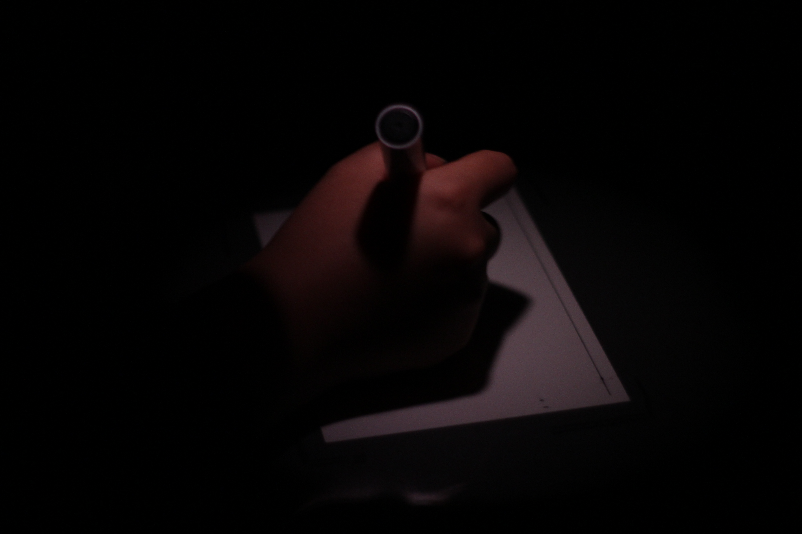

about /SECRETS IN THE DARK/
This project is for Collective Methods class in NYU Shanghai. I invite my classmates here in NYU Prague where I am spending my spring 2016 Semester into the dark room following by turning off the light.
Then, I introduce this project to them like what I am doing now. I ask them to share a secret with me and in return, I will share a secret of mine with them.
 At the same time, I ask them to come up with an adjective that they think best describes this secret or how they personally feel about this project. I will turn the red light (printing photo purpose) back on once we have shared our secrets and they have an adjective in mind.
At the same time, I ask them to come up with an adjective that they think best describes this secret or how they personally feel about this project. I will turn the red light (printing photo purpose) back on once we have shared our secrets and they have an adjective in mind.
Under the dim red light, I ask them to write down their adjectives on a sheet of glass within a pre-measured and pre-marked area. I make sure they are aware that they can do anything with this area (draw, write, etc) as long as the adjective is visible. Once the word is written, I will place a piece of light-sensative matt photo paper under that area.
Then I put the photo paper into running water for 1 minute and then use a squeegee to drain the photo paper. The paper then needs to be hung up and wait till it dries up completely.
 I, then, scan those dry photo paper and post them here with those secrets I collected in the dark.
I, then, scan those dry photo paper and post them here with those secrets I collected in the dark.
Special thanks to Professor Bara Brazkova and the sweet lady managing the keys in Male namesti 2 Blue Building whom I bothered innumerable times.
Then, I introduce this project to them like what I am doing now. I ask them to share a secret with me and in return, I will share a secret of mine with them.
Under the dim red light, I ask them to write down their adjectives on a sheet of glass within a pre-measured and pre-marked area. I make sure they are aware that they can do anything with this area (draw, write, etc) as long as the adjective is visible. Once the word is written, I will place a piece of light-sensative matt photo paper under that area.

Once the paper is placed correctly, I ask participants to turn on the enlarger to project whatever they have just written on the glass onto the light-sensaive paper. (The exposure time, 5 seconds, and contrast, level of 4, of the englarger has been adjsuted by me according to those test strips I have made before the participants come into the darkroom.) Then, I immerse the photo paper into photo paper developer for 60 to 90 seconds, followed by fix for 20 to 30 seconds, then stop for 5 to 10 minutes. Once the photo paper is in the tray of fix, the normal light can be turned on, and the participant may leave.
Then I put the photo paper into running water for 1 minute and then use a squeegee to drain the photo paper. The paper then needs to be hung up and wait till it dries up completely.
Special thanks to Professor Bara Brazkova and the sweet lady managing the keys in Male namesti 2 Blue Building whom I bothered innumerable times.